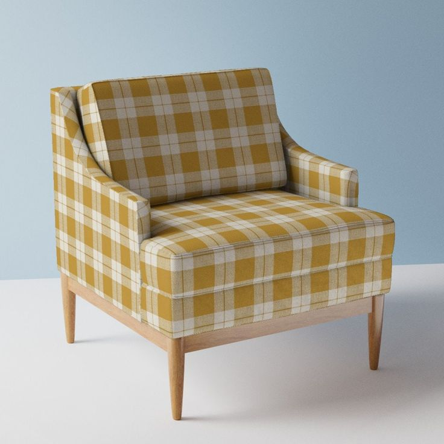

Textiles & Fabric Choices
UNITY & PEACE
The use of cohesive colors and minimalist decor fosters a sense of
unity and peace throughout the space.
The mid-century modern home decor trend is here to stay and MCM upholstery fabrics are the best choices. This retro look (~ the 1950s, 1960s vintage upholstery fabric) is defined by fun geometric patterns, textured stripes, colorful and neutral wools, and amazing solid textures like boucles, velvets, and chenilles.
--Vintage Upholstery Fabric--
refers to textile material used for covering furniture that is characterized by its age, typically being
at least 20-30 years old, and often features designs, patterns, or weaves that reflect the style
and qualities of a specific historical period.
- example of the materials

Latest Luxury Upholstery Collections
OR
CLICK ON THE PICTURE BELOW ;)